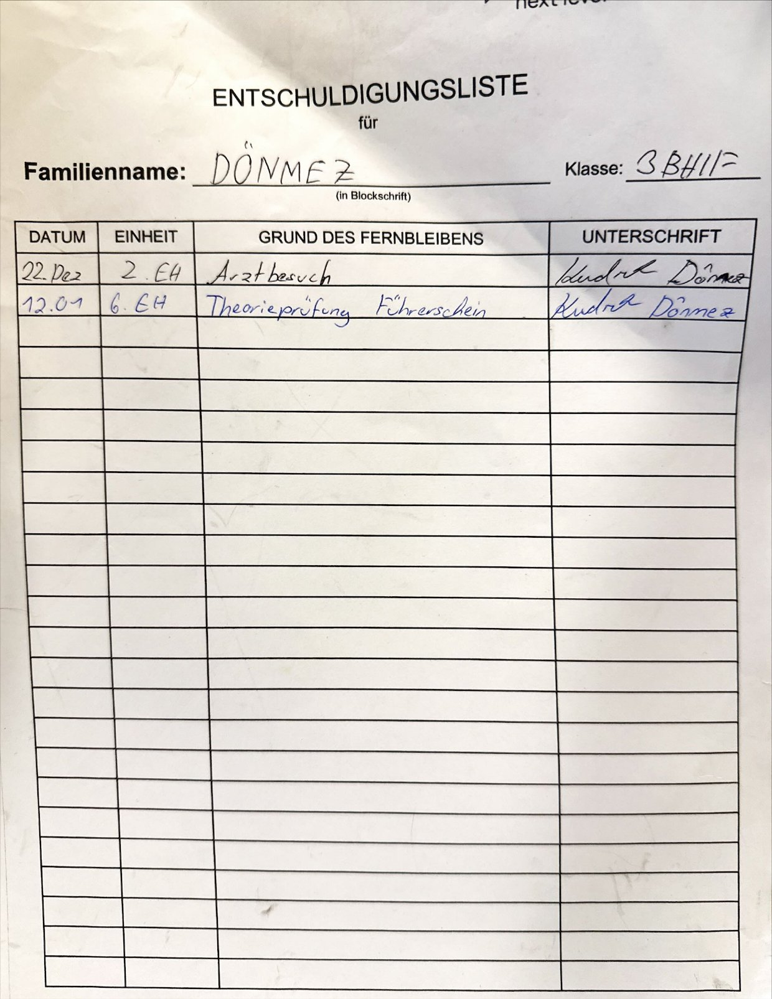

Die digitale Entschuldigungsliste für Fehlstunden.
WebUntis → Schüler → Eltern → Lehrer

Die Fehlstunden kommen automatisch aus WebUntis.
Reicht die Entschuldigung mit Arztbestätigung ein.
Bestätigen sie mit ihrer Unterschrift.
Prüfen und akzeptieren die Entschuldigung.
↓ So sehen die drei Ansichten aus
Montag, 14. September · 1. bis 4. Stunde
Grund: krank
Die Eltern sehen die Anfrage samt Arztbestätigung und unterschreiben direkt am Handy oder PC.
Montag, 14. September · 1. bis 4. Stunde
Unterschrift Erziehungsberechtigte/r
Dienstag, 15. September · 3. bis 4. Stunde
Grund: Arzttermin
Atteste sollen direkt hochgeladen werden können.
Offene Entschuldigungen gehen nicht mehr unter.
Die offizielle Schnittstelle ist bereits angefragt.
Oberfläche für Schüler, Eltern und Lehrer.
Logik, Login, Rollen und Schnittstellen.
Speichert Nutzer, Fehlstunden und Entschuldigungen.
Alibi macht Entschuldigungen einfacher, digitaler und nachvollziehbarer.
Danke. Fragen?